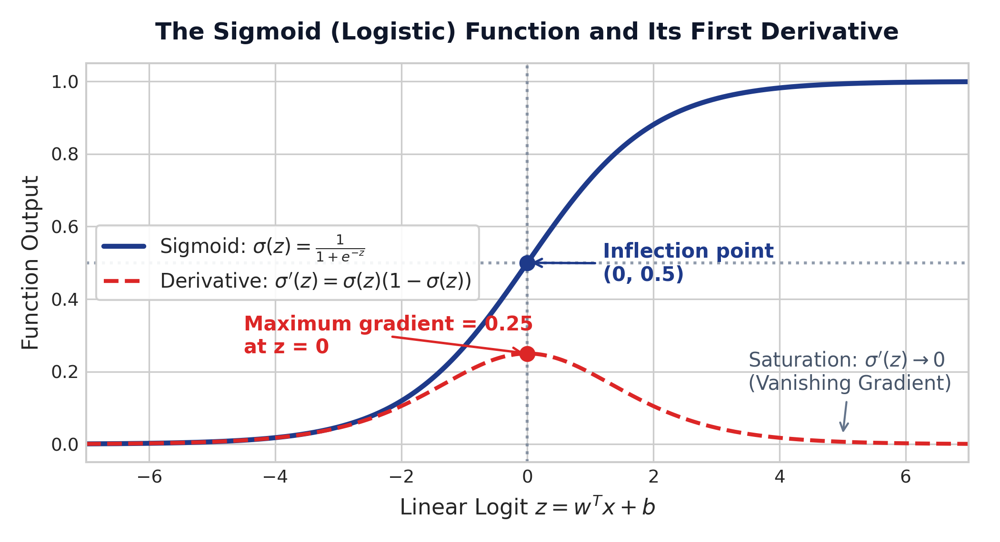
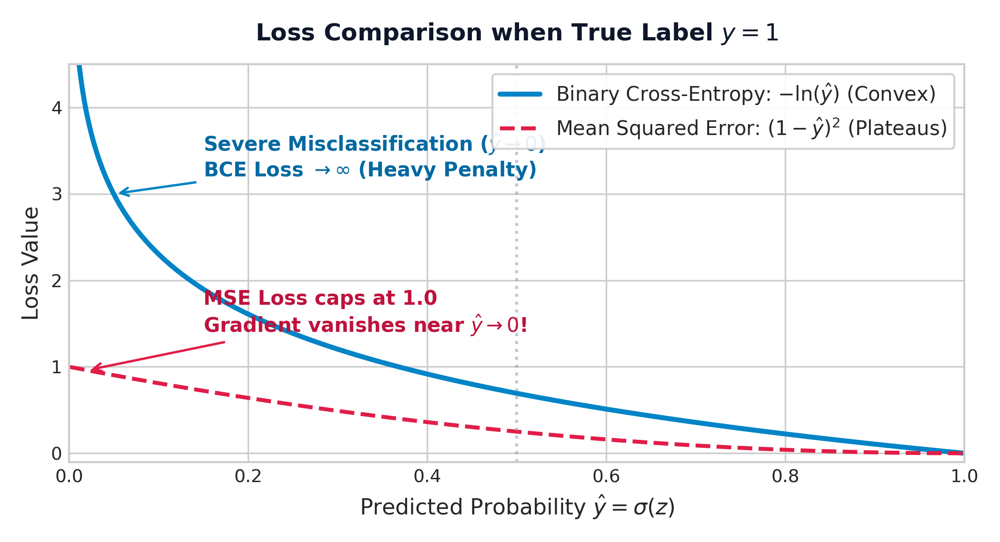
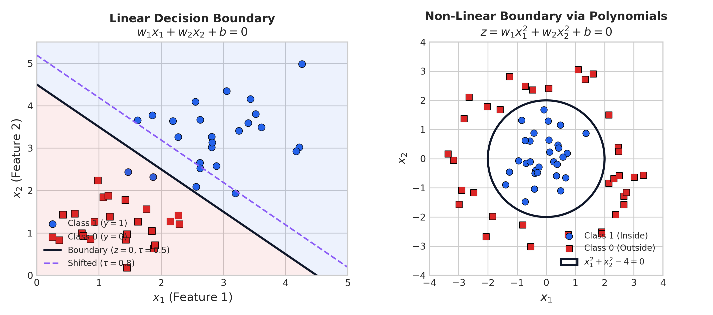
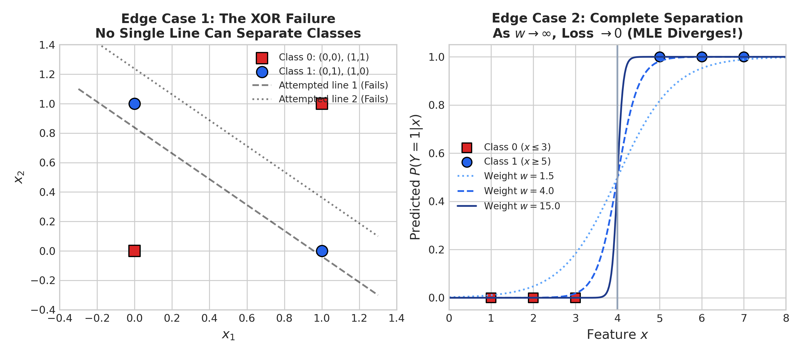

Document Structure & Exam Blueprint
- Part 1: Core Mathematical Foundations & Derivations (Sigmoid from Odds, BCE Loss from MLE, Sigmoid Derivative proof, Chain Rule Gradient proof, Hessian convexity proof).
- Part 2: Fully Solved Pen-and-Paper Numerical Question Bank (7 distinct question types with full arithmetic scratchpads: Forward pass, Batch Gradient Descent, Linear & Non-Linear Decision Boundaries, $L_1/L_2$ Regularization, Multinomial Softmax, Odds Ratios, Cost-Sensitive Thresholds).
- Part 3: Where Logistic Regression Shines (Comprehensive Strengths) (Calibrated probabilities, odds ratio interpretability, convex global convergence, computational speed $\mathcal{O}(d)$, streaming/SGD).
- Part 4: Where Logistic Regression is Lacking (Limitations & Failure Modes) (Linear boundary constraint, multicollinearity breakdown, outlier sensitivity, no feature interactions).
- Part 5: Edge Cases & Tricky Exam Pitfalls (Complete separation / Hauck-Donner effect, class imbalance bias shift, XOR impossibility algebraic proof, collinear features, numerical underflow/overflow).
- Part 6: Fast-Track Exam Hall Cheatsheet & Comparison Matrix (Comparison table vs Linear Regression, SVM, Naive Bayes; Golden Formula Sheet; Top 10 Viva/Exam Q&As).
Part 1: Core Mathematical Foundations & "Must-Derive" Exam Proofs
1.1 Why Linear Regression Fails for Classification (Classic 5-Mark Question)
In standard Ordinary Least Squares (OLS) regression, we model $\hat{y} = \mathbf{w}^T \mathbf{x} + b$. When applied to binary classification ($y \in \{0, 1\}$), linear regression suffers from three fundamental theoretical flaws:
- Unbounded Predictions ($-\infty < \hat{y} < \infty$): Linear regression outputs values outside $[0, 1]$. A prediction of $\hat{y} = 1.64$ or $\hat{y} = -0.32$ cannot be interpreted as a valid probability.
- Extreme Sensitivity to Outliers (High Leverage Points): Points located far from the decision boundary in the positive or negative direction torque the regression line, shifting the 0.5 decision boundary and causing severe misclassifications on perfectly separable data.
- Heteroscedasticity (Violation of Gauss-Markov Theorem): For a binary variable, variance is $\text{Var}(Y|\mathbf{x}) = p(\mathbf{x})(1 - p(\mathbf{x}))$. Since the error variance directly depends on $\mathbf{x}$, errors are non-constant (heteroscedastic), rendering OLS hypothesis testing and standard errors invalid.
1.2 Derivation of the Sigmoid Function from Odds and Log-Odds (The Logit Link)
To restrict outputs strictly to probabilities $p \in (0, 1)$, we model the log-odds (logit) as a linear combination of features:
$$\text{Odds} = \frac{p}{1 - p} \quad \text{where } p = P(Y=1|\mathbf{x})$$
$$\text{Logit Link:} \quad \ln\left(\frac{p}{1 - p}\right) = z = \mathbf{w}^T \mathbf{x} + b = \sum_{j=1}^d w_j x_j + b$$
Pen-and-Paper Step-by-Step Derivation: Inverting the Logit to find $p = \sigma(z)$ Derivation 1.1
Step 1: Exponentiate both sides of the logit equation to solve for odds:
$$e^{\ln\left(\frac{p}{1 - p}\right)} = e^z \implies \frac{p}{1 - p} = e^z$$
Step 2: Cross-multiply and expand terms:
$$p = e^z (1 - p) \implies p = e^z - p \cdot e^z$$
Step 3: Collect all terms containing $p$ on the left-hand side:
$$p + p \cdot e^z = e^z \implies p(1 + e^z) = e^z$$
Step 4: Divide by $(1 + e^z)$ and divide numerator and denominator by $e^z$:
$$p = \frac{e^z}{1 + e^z} = \frac{\frac{e^z}{e^z}}{\frac{1 + e^z}{e^z}} = \mathbf{\frac{1}{1 + e^{-z}} \equiv \sigma(z)}$$
Fundamental Sigmoid Properties:
- Inflection point: $\sigma(0) = \frac{1}{1 + e^0} = \frac{1}{2} = 0.5$.
- Symmetry: $\sigma(-z) = \frac{1}{1 + e^z} = \frac{e^{-z}}{e^{-z} + 1} = 1 - \frac{1}{1 + e^{-z}} = 1 - \sigma(z)$.
- Asymptotic limits: $\lim_{z \to +\infty} \sigma(z) = 1$ and $\lim_{z \to -\infty} \sigma(z) = 0$.
Exam Proof 1: Derivative of the Sigmoid Function $\sigma'(z) = \sigma(z)(1 - \sigma(z))$ 5 Marks
Frequent Exam Question: "Prove that the derivative of the standard logistic sigmoid function is $\sigma'(z) = \sigma(z)(1 - \sigma(z))$."
Proof using the Power / Chain Rule:
Write $\sigma(z) = (1 + e^{-z})^{-1}$. Differentiating with respect to $z$:
$$\frac{d}{dz}\sigma(z) = -1 \cdot (1 + e^{-z})^{-2} \cdot \frac{d}{dz}(1 + e^{-z}) = -(1 + e^{-z})^{-2} \cdot (-e^{-z}) = \frac{e^{-z}}{(1 + e^{-z})^2}$$
Split the fraction into two factors:
$$\frac{d}{dz}\sigma(z) = \left( \frac{1}{1 + e^{-z}} \right) \cdot \left( \frac{e^{-z}}{1 + e^{-z}} \right)$$
Notice that the first factor is $\sigma(z)$. For the second factor, add and subtract 1 in the numerator:
$$\frac{e^{-z}}{1 + e^{-z}} = \frac{(1 + e^{-z}) - 1}{1 + e^{-z}} = \frac{1 + e^{-z}}{1 + e^{-z}} - \frac{1}{1 + e^{-z}} = 1 - \sigma(z)$$
Substitute back:
$$\boxed{\mathbf{\sigma'(z) = \sigma(z)\big(1 - \sigma(z)\big)}} \quad \blacksquare$$
Key Insight for Written Exams: At $z = 0$, $\sigma(0) = 0.5$, so $\sigma'(0) = 0.5 \times 0.5 = \mathbf{0.25}$ (the maximum rate of change). As $|z| \to \infty$, $\sigma'(z) \to 0$, which causes the vanishing gradient problem when saturated.

Figure 1: The Sigmoid Activation Function $\sigma(z)$ and its derivative $\sigma'(z)$. Notice maximum derivative 0.25 at $z=0$ and asymptotic saturation as $|z| \to \infty$.
1.3 Derivation of Binary Cross-Entropy Loss via Maximum Likelihood Estimation (MLE)
Let training dataset $\mathcal{D} = \{(\mathbf{x}_1, y_1), (\mathbf{x}_2, y_2), \dots, (\mathbf{x}_m, y_m)\}$ where labels $y_i \in \{0, 1\}$. We treat each target $y_i$ as a Bernoulli random variable with success parameter $\hat{y}_i = P(Y=1|\mathbf{x}_i) = \sigma(\mathbf{w}^T \mathbf{x}_i + b)$.
Pen-and-Paper Derivation of Binary Cross-Entropy (Log-Loss) Derivation 1.2
Step 1: Write the Probability Mass Function (PMF) for a single sample:
$$P(Y = y_i | \mathbf{x}_i) = \hat{y}_i^{y_i} (1 - \hat{y}_i)^{1 - y_i} \quad \text{where } y_i \in \{0, 1\}$$
Check: If $y_i = 1$, $P = \hat{y}_i^1 (1-\hat{y}_i)^0 = \hat{y}_i$. If $y_i = 0$, $P = \hat{y}_i^0 (1-\hat{y}_i)^1 = 1 - \hat{y}_i$. Perfect!
Step 2: Construct the Joint Likelihood function over $m$ I.I.D. samples:
$$L(\mathbf{w}, b) = \prod_{i=1}^m P(Y = y_i | \mathbf{x}_i) = \prod_{i=1}^m \hat{y}_i^{y_i} (1 - \hat{y}_i)^{1 - y_i}$$
Step 3: Take the natural logarithm to get the Log-Likelihood $\ell(\mathbf{w}, b)$ (converts products to sums):
$$\ell(\mathbf{w}, b) = \ln L(\mathbf{w}, b) = \sum_{i=1}^m \ln\left[ \hat{y}_i^{y_i} (1 - \hat{y}_i)^{1 - y_i} \right] = \sum_{i=1}^m \Big[ y_i \ln(\hat{y}_i) + (1 - y_i) \ln(1 - \hat{y}_i) \Big]$$
Step 4: Formulate the Cost Function $J(\mathbf{w}, b)$ via Empirical Risk Minimization:
In machine learning, optimization frameworks minimize cost rather than maximizing likelihood. We define $J(\mathbf{w}, b)$ as the negative average log-likelihood:
$$\boxed{\mathbf{J(\mathbf{w}, b) = -\frac{1}{m} \sum_{i=1}^m \Big[ y_i \ln(\hat{y}_i) + (1 - y_i) \ln(1 - \hat{y}_i) \Big]}} \quad \blacksquare$$
1.4 Why Mean Squared Error (MSE) is NEVER Used for Logistic Regression (Vital 10-Mark Exam Topic)
Students often ask: "Why can't we just use $J_{\text{MSE}} = \frac{1}{2m} \sum (y_i - \hat{y}_i)^2$ with $\hat{y}_i = \sigma(z_i)$?" In an exam, you must provide two rigorous arguments:
Failure Mode: Why MSE Fails with Sigmoidal Activation Exam Contrast
1. Non-Convex Cost Surface (Local Minima Traps):
When MSE is composed with the non-linear sigmoid function $\sigma(\mathbf{w}^T \mathbf{x} + b)$, the resulting Hessian matrix is not positive semi-definite everywhere. The optimization landscape becomes bumpy with numerous saddle points and sub-optimal local minima. Gradient descent can get permanently stuck.
2. Severe Vanishing Gradient on Disastrous Predictions:
Differentiating MSE for a single sample $L_{\text{MSE}} = \frac{1}{2}(y - \sigma(z))^2$ with respect to weight $w_j$:
$$\frac{\partial L_{\text{MSE}}}{\partial w_j} = (\sigma(z) - y) \cdot \sigma'(z) \cdot x_j = (\hat{y} - y) \cdot \mathbf{\hat{y}(1 - \hat{y})} \cdot x_j$$
Now analyze a pathological case: Suppose true label is $y = 1$, but the model makes a catastrophic error predicting $z = -8$, so $\hat{y} = \sigma(-8) \approx 0.0003$.
- Error term: $(\hat{y} - y) = 0.0003 - 1 = -0.9997$ (huge error!).
- Sigmoid derivative factor: $\hat{y}(1 - \hat{y}) = 0.0003 \times (0.9997) \approx \mathbf{0.0003}$.
- Gradient: $\frac{\partial L_{\text{MSE}}}{\partial w_j} = (-0.9997) \times (0.0003) \times x_j \approx \mathbf{-0.0003 x_j \approx 0}$!
The Catastrophe: Even though the prediction was completely wrong, the gradient is virtually zero! The model learns at a snail's pace and cannot correct itself. In contrast, for Binary Cross-Entropy, the derivative simplifies cleanly to $(\hat{y} - y)x_j = -0.9997 x_j$, maintaining a massive, decisive gradient update!

Figure 2: Convex BCE Loss vs Non-Convex MSE Loss when true label $y=1$. As $\hat{y} \to 0$, BCE loss approaches $\infty$ providing strong gradient pull, whereas MSE caps at 1.0 with a vanishing gradient.
1.5 Exam Proof 2: Full Derivation of the Gradient Updates via Chain Rule
To update parameters using Gradient Descent, we must derive $\frac{\partial J}{\partial w_j}$ and $\frac{\partial J}{\partial b}$.
Chain Rule Derivation of Logistic Regression Parameter Gradients 10 Marks
For a single sample with loss $\mathcal{L} = -\big[ y \ln(\hat{y}) + (1 - y) \ln(1 - \hat{y}) \big]$ where $\hat{y} = \sigma(z)$ and $z = \sum_{j=1}^d w_j x_j + b$:
$$\frac{\partial \mathcal{L}}{\partial w_j} = \frac{\partial \mathcal{L}}{\partial \hat{y}} \cdot \frac{\partial \hat{y}}{\partial z} \cdot \frac{\partial z}{\partial w_j}$$
Step 1: Compute $\frac{\partial \mathcal{L}}{\partial \hat{y}}$:
$$\frac{\partial \mathcal{L}}{\partial \hat{y}} = -\left[ \frac{y}{\hat{y}} + \frac{1 - y}{1 - \hat{y}} \cdot (-1) \right] = -\frac{y}{\hat{y}} + \frac{1 - y}{1 - \hat{y}} = \frac{-y(1 - \hat{y}) + \hat{y}(1 - y)}{\hat{y}(1 - \hat{y})} = \frac{-y + y\hat{y} + \hat{y} - y\hat{y}}{\hat{y}(1 - \hat{y})} = \mathbf{\frac{\hat{y} - y}{\hat{y}(1 - \hat{y})}}$$
Step 2: Compute $\frac{\partial \hat{y}}{\partial z}$ using our Sigmoid Derivative from Proof 1:
$$\frac{\partial \hat{y}}{\partial z} = \sigma'(z) = \mathbf{\hat{y}(1 - \hat{y})}$$
Step 3: Multiply Step 1 and Step 2 to find $\frac{\partial \mathcal{L}}{\partial z}$ (The "Miraculous Cancellation"):
$$\frac{\partial \mathcal{L}}{\partial z} = \frac{\partial \mathcal{L}}{\partial \hat{y}} \cdot \frac{\partial \hat{y}}{\partial z} = \left( \frac{\hat{y} - y}{\hat{y}(1 - \hat{y})} \right) \cdot \big[ \hat{y}(1 - \hat{y}) \big] = \mathbf{\hat{y} - y}$$
Note for exam: Point out this exact mathematical cancellation! The denominator $\hat{y}(1-\hat{y})$ from the log loss cancels perfectly with the sigmoid derivative!
Step 4: Compute $\frac{\partial z}{\partial w_j}$ and $\frac{\partial z}{\partial b}$:
$$\frac{\partial z}{\partial w_j} = \frac{\partial}{\partial w_j}\left( \sum_{k} w_k x_k + b \right) = x_j, \qquad \frac{\partial z}{\partial b} = 1$$
Step 5: Apply chain rule and average across all $m$ training observations:
$$\boxed{\mathbf{\frac{\partial J}{\partial w_j} = \frac{1}{m} \sum_{i=1}^m (\hat{y}^{(i)} - y^{(i)}) x_j^{(i)}}} \qquad \boxed{\mathbf{\frac{\partial J}{\partial b} = \frac{1}{m} \sum_{i=1}^m (\hat{y}^{(i)} - y^{(i)})}}$$
Gradient Descent Parameter Update Rule:
$$w_j \leftarrow w_j - \alpha \frac{\partial J}{\partial w_j} = w_j - \frac{\alpha}{m} \sum_{i=1}^m (\hat{y}^{(i)} - y^{(i)}) x_j^{(i)}$$
$$b \leftarrow b - \alpha \frac{\partial J}{\partial b} = b - \frac{\alpha}{m} \sum_{i=1}^m (\hat{y}^{(i)} - y^{(i)})$$
1.6 Mathematical Proof of Convexity via the Hessian Matrix
To prove that Binary Cross-Entropy has no local minima and is strictly convex, compute the second-order partial derivatives (the Hessian matrix $\mathbf{H}$):
$$H_{jk} = \frac{\partial^2 J}{\partial w_j \partial w_k} = \frac{\partial}{\partial w_k} \left[ \frac{1}{m} \sum_{i=1}^m (\sigma(\mathbf{w}^T \mathbf{x}^{(i)} + b) - y^{(i)}) x_j^{(i)} \right] = \frac{1}{m} \sum_{i=1}^m \sigma(z^{(i)})\big(1 - \sigma(z^{(i)})\big) x_j^{(i)} x_k^{(i)}$$
In compact matrix notation:
$$\mathbf{H} = \frac{1}{m} \mathbf{X}^T \mathbf{D} \mathbf{X}$$
where $\mathbf{D} \in \mathbb{R}^{m \times m}$ is a diagonal weight matrix with elements $D_{ii} = \hat{y}^{(i)}(1 - \hat{y}^{(i)})$. Since $0 < \hat{y}^{(i)} < 1$, every diagonal entry $D_{ii} > 0$, making $\mathbf{D}$ strictly positive definite. For any arbitrary non-zero vector $\mathbf{v} \in \mathbb{R}^d$:
$$\mathbf{v}^T \mathbf{H} \mathbf{v} = \frac{1}{m} \mathbf{v}^T (\mathbf{X}^T \mathbf{D} \mathbf{X}) \mathbf{v} = \frac{1}{m} (\mathbf{X}\mathbf{v})^T \mathbf{D} (\mathbf{X}\mathbf{v}) = \frac{1}{m} \sum_{i=1}^m D_{ii} (\mathbf{x}_i^T \mathbf{v})^2 \ge 0$$
Because $\mathbf{v}^T \mathbf{H} \mathbf{v} \ge 0$, $\mathbf{H}$ is Positive Semi-Definite (PSD) everywhere. Therefore, the cost function $J(\mathbf{w})$ is globally convex, guaranteeing that standard gradient descent, L-BFGS, or Newton-Raphson will always converge to the global minimum.
Part 2: Fully Solved Pen-and-Paper Numerical Question Bank
These problems are modeled directly on university examination standards (VIT University, GATE, Master's CS/Data Science). Each question includes full arithmetic steps, scratchpads, and presentation formatting.
Problem 2.1: Forward Pass, Sigmoid Evaluation, Odds & Threshold Decision 6 Marks
Question: A trained binary logistic regression classifier has weights $w_1 = 0.8$, $w_2 = -1.2$, and bias $b = 0.4$. A test observation has features $x_1 = 2.5$ and $x_2 = 1.0$, with true label $y = 1$.
- Compute the net input logit $z$.
- Compute the predicted probability $\hat{y} = P(Y=1|\mathbf{x})$ using pen-and-paper arithmetic ($e^{-1.2} \approx 0.3012$).
- Calculate the Odds and the Log-Odds of this observation.
- Predict the class using: (i) default threshold $\tau = 0.5$, (ii) conservative threshold $\tau = 0.80$.
- Calculate the individual sample Binary Cross-Entropy loss ($\ln(0.7685) \approx -0.2633$).
Step-by-Step Pen-and-Paper Solution:
(a) Net Linear Logit $z$:
z = w1 * x1 + w2 * x2 + b
= (0.8)(2.5) + (-1.2)(1.0) + 0.4
= 2.00 - 1.20 + 0.40 = 1.20
$$\boxed{\mathbf{z = 1.20}}$$
(b) Predicted Probability $\hat{y}$:
y_hat = 1 / (1 + e^(-z)) = 1 / (1 + e^(-1.20))
Given e^(-1.20) ≈ 0.3012
Denominator = 1 + 0.3012 = 1.3012
y_hat = 1.0 / 1.3012 = 0.76852... ≈ 0.7685 (or 76.85%)
$$\boxed{\mathbf{\hat{y} = 0.7685}}$$
(c) Odds and Log-Odds:
Odds = y_hat / (1 - y_hat) = 0.7685 / (1 - 0.7685) = 0.7685 / 0.2315 ≈ 3.3197
Check via e^z: e^(1.20) ≈ 3.3201 (matches within rounding!)
Log-Odds = ln(Odds) = ln(3.32) = 1.20 = z
$$\boxed{\mathbf{\text{Odds} = 3.32 : 1}}, \quad \boxed{\mathbf{\text{Log-Odds} = 1.20}}$$
(d) Classification Decisions:
- For $\tau = 0.5$: Since $\hat{y} = 0.7685 \ge 0.5$, Predicted Class = 1 (Correct prediction!).
- For $\tau = 0.8$: Since $\hat{y} = 0.7685 < 0.80$, Predicted Class = 0.
(e) Binary Cross-Entropy Loss:
L = -[y * ln(y_hat) + (1 - y) * ln(1 - y_hat)]
Since y = 1:
L = -[1 * ln(0.7685) + 0] = -(-0.2633) = 0.2633
$$\boxed{\mathbf{\mathcal{L} = 0.2633}}$$
Problem 2.2: Full Batch Gradient Descent Epoch with Multiple Points 10 Marks
Question: Consider a mini-dataset of $m = 3$ observations with 2 features each:
| Sample $i$ | $x_1$ | $x_2$ | True Label $y$ |
|---|
| 1 | 1.0 | 2.0 | 1 |
| 2 | 2.0 | 1.0 | 0 |
| 3 | 3.0 | 3.0 | 1 |
Initial model parameters are $w_1 = 0.2$, $w_2 = -0.4$, and bias $b = 0.1$. The learning rate is $\alpha = 0.2$.
- Calculate the linear score $z^{(i)}$, prediction $\hat{y}^{(i)}$, error $e^{(i)} = (\hat{y}^{(i)} - y^{(i)})$, and individual loss for all 3 samples.
- Compute the total batch Cross-Entropy Cost $J(\mathbf{w}, b)$.
- Compute the gradients $\frac{\partial J}{\partial w_1}$, $\frac{\partial J}{\partial w_2}$, and $\frac{\partial J}{\partial b}$.
- Perform one full step of Gradient Descent to obtain updated parameters $w_1', w_2', b'$.
Step-by-Step Pen-and-Paper Solution:
(a) Forward Pass and Error Computation:
Sample 1: x = [1.0, 2.0], y = 1
z1 = (0.2)(1.0) + (-0.4)(2.0) + 0.1 = 0.2 - 0.8 + 0.1 = -0.50
y_hat_1 = 1 / (1 + e^(0.50)) = 1 / (1 + 1.6487) = 1 / 2.6487 ≈ 0.3775
e1 = y_hat_1 - y1 = 0.3775 - 1.0 = -0.6225
L1 = -ln(0.3775) ≈ 0.9742
Sample 2: x = [2.0, 1.0], y = 0
z2 = (0.2)(2.0) + (-0.4)(1.0) + 0.1 = 0.4 - 0.4 + 0.1 = +0.10
y_hat_2 = 1 / (1 + e^(-0.10)) = 1 / (1 + 0.9048) = 1 / 1.9048 ≈ 0.5250
e2 = y_hat_2 - y2 = 0.5250 - 0.0 = +0.5250
L2 = -ln(1 - 0.5250) = -ln(0.4750) ≈ 0.7444
Sample 3: x = [3.0, 3.0], y = 1
z3 = (0.2)(3.0) + (-0.4)(3.0) + 0.1 = 0.6 - 1.2 + 0.1 = -0.50
y_hat_3 = 1 / (1 + e^(0.50)) = 1 / 2.6487 ≈ 0.3775
e3 = y_hat_3 - y3 = 0.3775 - 1.0 = -0.6225
L3 = -ln(0.3775) ≈ 0.9742
Summary Table for Exam Presentation:
| $i$ | $x_{i1}$ | $x_{i2}$ | $y_i$ | $z_i$ | $\hat{y}_i$ | Error $e_i = (\hat{y}_i - y_i)$ | Loss $\mathcal{L}_i$ |
|---|
| 1 | 1.0 | 2.0 | 1 | -0.50 | 0.3775 | -0.6225 | 0.9742 |
| 2 | 2.0 | 1.0 | 0 | +0.10 | 0.5250 | +0.5250 | 0.7444 |
| 3 | 3.0 | 3.0 | 1 | -0.50 | 0.3775 | -0.6225 | 0.9742 |
| Column Sums ($\sum$): | -0.7200 | 2.6928 |
(b) Batch Cost Function $J(\mathbf{w}, b)$:
$$J = \frac{1}{3} \sum_{i=1}^3 \mathcal{L}_i = \frac{0.9742 + 0.7444 + 0.9742}{3} = \frac{2.6928}{3} = \mathbf{0.8976}$$
(c) Gradient Calculation:
dJ/dw1 = (1/3) * ∑ [e_i * x_i1]
= (1/3) * [ (-0.6225)(1.0) + (0.5250)(2.0) + (-0.6225)(3.0) ]
= (1/3) * [ -0.6225 + 1.0500 - 1.8675 ]
= (1/3) * [ -1.4400 ] = -0.4800
dJ/dw2 = (1/3) * ∑ [e_i * x_i2]
= (1/3) * [ (-0.6225)(2.0) + (0.5250)(1.0) + (-0.6225)(3.0) ]
= (1/3) * [ -1.2450 + 0.5250 - 1.8675 ]
= (1/3) * [ -2.5875 ] = -0.8625
dJ/db = (1/3) * ∑ [e_i]
= (1/3) * [ -0.6225 + 0.5250 - 0.6225 ]
= (1/3) * [ -0.7200 ] = -0.2400
(d) One Step Gradient Descent Parameter Updates ($\alpha = 0.2$):
w1_new = w1 - alpha * (dJ/dw1) = 0.20 - (0.2)(-0.4800) = 0.20 + 0.0960 = 0.2960
w2_new = w2 - alpha * (dJ/dw2) = -0.40 - (0.2)(-0.8625) = -0.40 + 0.1725 = -0.2275
b_new = b - alpha * (dJ/db) = 0.10 - (0.2)(-0.2400) = 0.10 + 0.0480 = 0.1480
$$\boxed{\mathbf{w_1^{(1)} = 0.2960}}, \quad \boxed{\mathbf{w_2^{(1)} = -0.2275}}, \quad \boxed{\mathbf{b^{(1)} = 0.1480}}$$
Problem 2.3: Deriving and Plotting Decision Boundaries (Linear & Polynomial) 10 Marks
Question:
- A linear logistic classifier has weights $\mathbf{w} = [3, -2]^T$ and bias $b = -6$.
- Derive the algebraic equation of the decision boundary at probability threshold $\tau = 0.5$. Express it in slope-intercept form $x_2 = m x_1 + c$.
- Determine the $x_1$-intercept and $x_2$-intercept.
- Classify test points $A(2, 1)$ and $B(1, -3)$.
- How does the decision boundary shift if the threshold is changed to $\tau = 0.8$? ($\ln(4) \approx 1.3863$).
- Suppose feature expansion creates $z = 2x_1^2 + 2x_2^2 - 8$. Derive and identify the geometric shape of the decision boundary. Which region represents Class 1?
Step-by-Step Pen-and-Paper Solution:
(a) Linear Boundary at $\tau = 0.5$:
By definition, at threshold $\tau = 0.5$, $\hat{y} = \sigma(z) = 0.5 \iff z = 0$.
w1 * x1 + w2 * x2 + b = 0
3*x1 - 2*x2 - 6 = 0
2*x2 = 3*x1 - 6
x2 = (3/2)*x1 - 3
$$\boxed{\mathbf{x_2 = 1.5 x_1 - 3}} \quad \text{(Slope } m = 1.5, \text{ y-intercept } c = -3\text{)}$$
- $x_2$-intercept: Set $x_1 = 0 \implies x_2 = -3 \implies (0, -3)$.
- $x_1$-intercept: Set $x_2 = 0 \implies 1.5 x_1 = 3 \implies x_1 = 2 \implies (2, 0)$.
Classification of Test Points:
- Point $A(2, 1)$: $z_A = 3(2) - 2(1) - 6 = 6 - 2 - 6 = -2 < 0 \implies \hat{y}_A < 0.5 \implies$ Class 0.
- Point $B(1, -3)$: $z_B = 3(1) - 2(-3) - 6 = 3 + 6 - 6 = +3 > 0 \implies \hat{y}_B > 0.5 \implies$ Class 1.
Threshold Shift to $\tau = 0.8$:
p = 0.8 => Odds = 0.8 / 0.2 = 4
z = ln(Odds) = ln(4) ≈ 1.3863
3*x1 - 2*x2 - 6 = 1.3863
2*x2 = 3*x1 - 7.3863
x2 = 1.5*x1 - 3.69315
$$\boxed{\mathbf{x_2 = 1.5 x_1 - 3.693}}$$
Exam Observation: The slope remains exactly the same ($m = 1.5$), but the boundary shifts parallelly downwards, making it harder for points to be classified as Class 1 (increasing precision, decreasing false positives).
(b) Non-Linear Polynomial Boundary:
Setting z = 0 => 2*x1^2 + 2*x2^2 - 8 = 0
Divide by 2:
x1^2 + x2^2 = 4 = 2^2
$$\boxed{\mathbf{x_1^2 + x_2^2 = 4}}$$
This is a Circle centered at the origin $(0, 0)$ with radius $R = 2$. For points inside the circle (e.g., $(0,0)$), $z = -8 < 0 \implies$ Class 0. For points outside the circle (e.g., $(3,3)$), $z = 2(9)+2(9)-8 = 28 > 0 \implies$ Class 1.

Figure 3: (Left) Linear Decision Boundary showing threshold shift from $\tau=0.5$ to $\tau=0.8$. (Right) Non-Linear Circular Decision Boundary achieved via quadratic polynomial feature expansion.
Problem 2.4: Regularized Logistic Regression ($L_2$ Ridge & $L_1$ Lasso) 8 Marks
Question: An overfitted logistic regression model has parameter vector $\mathbf{w} = [2.0, -3.0]^T$, dataset size $m = 20$, and regularizer hyperparameter $\lambda = 4.0$. At the current step, the unregularized cross-entropy gradient is $\nabla J_0 = [0.25, -0.40]^T$. The learning rate is $\alpha = 0.1$.
- Write the mathematical objective function for $L_2$ regularized logistic regression.
- Calculate the $L_2$ penalty contribution to the objective.
- Derive the $L_2$ regularized gradient update formula showing the weight decay shrinkage factor.
- Compute the updated weights $w_1', w_2'$ under $L_2$ regularization.
- Explain geometrically why $L_1$ regularization produces exact zeros (feature selection) while $L_2$ only shrinks weights asymptotically towards zero.
Step-by-Step Pen-and-Paper Solution:
(a) $L_2$ Objective Function:
$$J_{\text{reg}}(\mathbf{w}, b) = -\frac{1}{m} \sum_{i=1}^m \Big[ y^{(i)} \ln(\hat{y}^{(i)}) + (1 - y^{(i)}) \ln(1 - \hat{y}^{(i)}) \Big] + \frac{\lambda}{2m} \|\mathbf{w}\|_2^2$$
Important exam note: Notice the regularization term does NOT penalize the bias $b$!
(b) $L_2$ Penalty Calculation:
||w||_2^2 = w1^2 + w2^2 = (2.0)^2 + (-3.0)^2 = 4.0 + 9.0 = 13.0
Penalty = (lambda / (2m)) * ||w||_2^2 = (4.0 / (2 * 20)) * 13.0 = (4.0 / 40.0) * 13.0 = 0.10 * 13.0 = 1.30
$$\boxed{\text{Penalty} = \mathbf{1.30}}$$
(c) Gradient and Weight Decay Shrinkage Formula:
$$\frac{\partial J_{\text{reg}}}{\partial w_j} = \frac{\partial J_0}{\partial w_j} + \frac{\lambda}{m} w_j$$
$$w_j^{(t+1)} = w_j^{(t)} - \alpha \left( \frac{\partial J_0}{\partial w_j} + \frac{\lambda}{m} w_j^{(t)} \right) = \mathbf{w_j^{(t)} \left( 1 - \frac{\alpha \lambda}{m} \right) - \alpha \frac{\partial J_0}{\partial w_j}}$$
The term $\left( 1 - \frac{\alpha \lambda}{m} \right)$ is the Weight Decay Factor (always $< 1$).
(d) Numerical Weight Updates:
Weight Decay Factor = 1 - (alpha * lambda / m) = 1 - (0.1 * 4.0 / 20) = 1 - (0.4 / 20) = 1 - 0.02 = 0.98
Update w1:
w1_new = (2.0) * (0.98) - 0.1 * (0.25)
= 1.960 - 0.025 = 1.935
Update w2:
w2_new = (-3.0) * (0.98) - 0.1 * (-0.40)
= -2.940 + 0.040 = -2.900
$$\boxed{\mathbf{w_1^{(1)} = 1.935}}, \quad \boxed{\mathbf{w_2^{(1)} = -2.900}}$$
(e) Geometric Difference: $L_1$ (Lasso) vs $L_2$ (Ridge):
- $L_2$ (Ridge): The constraint region is a hypersphere (smooth circle). The elliptical contours of the unregularized loss typically touch the circle along a curve where neither coordinate is zero. Hence, weights are shrunk smoothly, but remain non-zero.
- $L_1$ (Lasso): The constraint region is a hyper-cross-polytope (a diamond in 2D with sharp vertices on the coordinate axes). Contours of the loss function frequently intersect the constraint region at these sharp corners, forcing coefficients to become exactly zero ($\mathbf{w}_j = 0$), performing intrinsic feature selection.
Problem 2.5: Multinomial Logistic Regression (Softmax Regression - 3 Classes) 10 Marks
Question: A 3-class classification problem (Classes $k \in \{0, 1, 2\}$) uses multinomial logistic regression. For an input vector $\mathbf{x} = [2.0, -1.0]^T$, the learned weight vectors and biases are:
- Class 0: $\mathbf{w}_0 = [1.0, 0.5]^T, \quad b_0 = 0.2$
- Class 1: $\mathbf{w}_1 = [-0.5, 2.0]^T, \quad b_1 = -0.5$
- Class 2: $\mathbf{w}_2 = [0.5, -1.0]^T, \quad b_2 = 0.0$
The ground truth label for this sample is Class 1 (One-hot vector $\mathbf{y} = [0, 1, 0]^T$).
- Compute the raw logits $z_0, z_1, z_2$.
- Compute the unnormalized exponentials $e^{z_k}$ and the Softmax normalization denominator.
- Compute the predicted probabilities $\hat{y}_0, \hat{y}_1, \hat{y}_2$. Verify that $\sum \hat{y}_k = 1.0$.
- Calculate the Categorical Cross-Entropy Loss for this sample ($\ln(0.00234) \approx -6.057$).
- Compute the error vector $\mathbf{e} = \hat{\mathbf{y}} - \mathbf{y}$ used for gradient backpropagation.
Step-by-Step Pen-and-Paper Solution:
(a) Raw Logits $z_k = \mathbf{w}_k^T \mathbf{x} + b_k$:
z0 = (1.0)(2.0) + (0.5)(-1.0) + 0.2 = 2.0 - 0.5 + 0.2 = 1.70
z1 = (-0.5)(2.0) + (2.0)(-1.0) - 0.5 = -1.0 - 2.0 - 0.5 = -3.50
z2 = (0.5)(2.0) + (-1.0)(-1.0) + 0.0 = 1.0 + 1.0 + 0.0 = 2.00
$$\boxed{\mathbf{z_0 = 1.70}}, \quad \boxed{\mathbf{z_1 = -3.50}}, \quad \boxed{\mathbf{z_2 = 2.00}}$$
(b) Exponentials $e^{z_k}$ and Denominator:
e^(z0) = e^(1.70) ≈ 5.4739
e^(z1) = e^(-3.50) ≈ 0.0302
e^(z2) = e^(2.00) ≈ 7.3891
Sum (Denominator) = 5.4739 + 0.0302 + 7.3891 = 12.8932
(c) Softmax Normalized Probabilities $P(Y=k|\mathbf{x}) = \frac{e^{z_k}}{\sum_{j} e^{z_j}}$:
y_hat_0 = 5.4739 / 12.8932 ≈ 0.4246 (42.46%)
y_hat_1 = 0.0302 / 12.8932 ≈ 0.00234 ≈ 0.0023 (0.23%)
y_hat_2 = 7.3891 / 12.8932 ≈ 0.5731 (57.31%)
Verification: 0.4246 + 0.0023 + 0.5731 = 1.0000. Verified!
$$\boxed{\mathbf{\hat{y}_0 = 0.4246}}, \quad \boxed{\mathbf{\hat{y}_1 = 0.0023}}, \quad \boxed{\mathbf{\hat{y}_2 = 0.5731}}$$
(d) Categorical Cross-Entropy Loss:
$$\mathcal{L} = -\sum_{k=0}^2 y_k \ln(\hat{y}_k) = -\Big[ 0 \cdot \ln(0.4246) + 1 \cdot \ln(0.00234) + 0 \cdot \ln(0.5731) \Big] = -\ln(0.00234) \approx \mathbf{6.057}$$
$$\boxed{\mathbf{\mathcal{L} = 6.057}}$$
Exam Note: The loss is huge (6.06) because the model predicted a near-zero probability ($0.23\%$) for the true class (Class 1), heavily penalizing the model!
(e) Error Vector $\mathbf{e} = \hat{\mathbf{y}} - \mathbf{y}$:
e0 = y_hat_0 - y0 = 0.4246 - 0.0 = +0.4246
e1 = y_hat_1 - y1 = 0.0023 - 1.0 = -0.9977
e2 = y_hat_2 - y2 = 0.5731 - 0.0 = +0.5731
$$\boxed{\mathbf{e = [+0.4246, -0.9977, +0.5731]^T}}$$
Notice that the error sum $\sum e_k = +0.4246 - 0.9977 + 0.5731 = 0.0000$! This zero-sum property holds universally for softmax backpropagation.
Problem 2.6: Odds Ratios & Real-World Feature Interpretation (Medical ML Focus) 6 Marks
Question: A clinical logistic regression model predicts the probability of developing coronary heart disease within 10 years:
$$\ln\left(\frac{p}{1-p}\right) = -3.80 + 0.05 \cdot \text{Age} + 0.02 \cdot \text{SystolicBP} + 0.90 \cdot \text{Smoker}$$
where $\text{Smoker} \in \{0, 1\}$, $\text{Age}$ is in years, and $\text{SystolicBP}$ is in mmHg.
- Calculate the Odds Ratio (OR) associated with being a smoker holding all other variables constant. Provide the clinical interpretation. ($e^{0.90} \approx 2.4596$).
- What is the percentage increase in the odds of heart disease for a person who is 10 years older? ($e^{0.50} \approx 1.6487$).
- Calculate the estimated risk (probability $p$) for a 60-year-old smoker with Systolic BP of 140 mmHg ($e^{-2.90} \approx 0.05502$).
Step-by-Step Pen-and-Paper Solution:
(a) Odds Ratio for Smoker:
OR = e^(beta_smoker) = e^(0.90) ≈ 2.46
$$\boxed{\mathbf{\text{OR}_{\text{Smoker}} = 2.46}}$$
Clinical Interpretation: Holding age and blood pressure constant, the odds of developing coronary heart disease for a smoker are 2.46 times (or 146% higher than) the odds for a non-smoker.
(b) 10-Year Age Increase Odds Multiplier:
Delta_Age = 10
Exponent = beta_age * Delta_Age = 0.05 * 10 = 0.50
OR_10yrs = e^(0.50) ≈ 1.6487
Percentage Increase = (OR - 1) * 100% = (1.6487 - 1) * 100% = +64.87%
$$\boxed{\mathbf{\text{Odds Increase} = +64.87\%}}$$
(c) Probability Calculation for Patient:
z = -3.80 + 0.05 * (60) + 0.02 * (140) + 0.90 * (1)
= -3.80 + 3.00 + 2.80 + 0.90
= -3.80 + 6.70 = +2.90
e^(-z) = e^(-2.90) ≈ 0.05502
p = 1 / (1 + 0.05502) = 1 / 1.05502 ≈ 0.9478 (94.78%)
$$\boxed{\mathbf{p = 0.9478 \quad (94.78\% \text{ probability of heart disease})}}$$
Problem 2.7: Classification Metrics & Cost-Sensitive Threshold Optimization 8 Marks
Question: An automated fraud detection system evaluates 1,000 transactions and yields the following confusion matrix at default threshold $\tau = 0.5$:
| Predicted Fraud (1) | Predicted Legit (0) |
|---|
| Actual Fraud (1) | $\text{TP} = 80$ | $\text{FN} = 20$ |
|---|
| Actual Legit (0) | $\text{FP} = 40$ | $\text{TN} = 860$ |
|---|
- Calculate Precision, Recall (Sensitivity), Specificity, and F1-Score.
- Suppose missing a fraudulent transaction incurs a loss of $C_{\text{FN}} = \$500$, while falsely freezing a legitimate card causes customer friction costing $C_{\text{FP}} = \$20$. Derive the mathematically optimal decision threshold $\tau^*$ that minimizes expected financial loss.
Step-by-Step Pen-and-Paper Solution:
(a) Standard Metrics:
Precision = TP / (TP + FP) = 80 / (80 + 40) = 80 / 120 = 0.6667 (66.67%)
Recall (Sensitivity) = TP / (TP + FN) = 80 / (80 + 20) = 80 / 100 = 0.8000 (80.00%)
Specificity = TN / (TN + FP) = 860 / (860 + 40) = 860 / 900 = 0.9556 (95.56%)
F1-Score = 2 * (Precision * Recall) / (Precision + Recall)
= 2 * (0.6667 * 0.8000) / (0.6667 + 0.8000)
= 2 * (0.5333) / (1.4667) = 1.0667 / 1.4667 ≈ 0.7273 (72.73%)
$$\boxed{\mathbf{\text{Precision} = 66.67\%}}, \quad \boxed{\mathbf{\text{Recall} = 80.00\%}}, \quad \boxed{\mathbf{\text{F1} = 0.7273}}$$
(b) Derivation of Optimal Decision Threshold $\tau^*$:
Let $p = P(Y=1|\mathbf{x})$. The expected cost of classifying as Fraud ($\hat{Y}=1$) vs Legit ($\hat{Y}=0$) is:
Expected Cost(Predict 1) = (1 - p) * C_FP
Expected Cost(Predict 0) = p * C_FN
We predict Fraud (Class 1) whenever:
Expected Cost(Predict 1) < Expected Cost(Predict 0)
(1 - p) * C_FP < p * C_FN
C_FP - p * C_FP < p * C_FN
C_FP < p * (C_FN + C_FP)
p > C_FP / (C_FN + C_FP)
$$\boxed{\mathbf{\tau^* = \frac{C_{\text{FP}}}{C_{\text{FP}} + C_{\text{FN}}}} = \frac{20}{20 + 500} = \frac{20}{520} \approx \mathbf{0.0385 \quad (3.85\%)}}$$
Critical Conclusion: The bank should flag transactions as fraud whenever the model's predicted probability exceeds just $3.85\%$! Relying on the default threshold of $0.50$ costs the bank massive financial losses due to missed frauds.
Part 3: Where Logistic Regression Shines (Comprehensive Strengths)
In written university exams and technical viva voce, professors expect you to articulate exactly why Logistic Regression remains an industry standard despite the rise of Deep Learning.
Top 6 Strengths & Strategic Advantages
-
True Calibrated Probabilities (Not Just Hard Class Labels):
Unlike Support Vector Machines (which output uncalibrated geometric margins) or Perceptrons, Logistic Regression directly outputs a continuous Bayesian posterior probability $P(Y=1|\mathbf{x}) \in (0, 1)$. This is indispensable in risk-sensitive applications (medicine, loan credit underwriting, fraud detection) where decisions require threshold tuning.
-
Exceptional Interpretability & Explainability (Odds Ratio):
Every learned weight $w_j$ has a direct, rigorous statistical meaning: $e^{w_j}$ is the multiplicative change in the odds of the outcome per unit increase in feature $x_j$, holding all other features fixed. In regulated industries governed by GDPR and the Equal Credit Opportunity Act, models must provide adverse action reasons—a feat easily satisfied by Logistic Regression.
-
Guaranteed Global Convergence (Strictly Convex Loss):
As proven in Section 1.6, the Binary Cross-Entropy loss surface is strictly convex everywhere. There are no suboptimal local minima or dangerous plateaus that plague Deep Neural Networks. Standard first-order (SGD) and second-order (Newton-Raphson / IRLS, L-BFGS) algorithms reliably converge to the exact global optimum.
-
Blazing Fast Training and Microsecond Inference ($\mathcal{O}(d)$):
At inference time, calculating $\hat{y} = \sigma(\mathbf{w}^T \mathbf{x} + b)$ requires only $d$ multiplications, $d$ additions, one exponentiation, and one division ($\mathcal{O}(d)$ complexity). A single CPU core can score over 1,000,000 predictions per second, making it ideal for edge devices, ad-click bidding engines, and low-latency APIs.
-
Streaming & Online Learning via Stochastic Gradient Descent (SGD):
Parameters can be updated one observation at a time: $\mathbf{w} \leftarrow \mathbf{w} - \alpha (\hat{y}^{(i)} - y^{(i)})\mathbf{x}^{(i)}$. The algorithm does not need to store entire terabyte datasets in RAM, enabling real-time streaming updates.
-
Natural Regularization Integration:
Easily incorporates $L_2$ Ridge penalties to combat collinearity or $L_1$ Lasso penalties for automated sparse feature selection (dropping irrelevant features to zero).
Part 4: Where Logistic Regression Lacks (Limitations & Failure Modes)
Top 6 Critical Weaknesses & Failure Points
-
Strict Linear Decision Boundary Constraint:
Logistic regression assumes that the log-odds are a linear combination of features. If the true underlying decision boundary is non-linear (e.g., XOR patterns, concentric circles, complex multi-modal manifolds), logistic regression fails catastrophically unless manual polynomial or kernel features are engineered.
-
Extreme Vulnerability to Multicollinearity:
When independent features are strongly correlated ($r > 0.85$), the Hessian matrix $\mathbf{X}^T \mathbf{D} \mathbf{X}$ becomes near-singular (ill-conditioned). Standard errors of the coefficients explode, signs of coefficients flip erratically, and feature importance becomes uninterpretable.
-
Sensitivity to Outliers & High-Leverage Observations:
Because cross-entropy penalizes confident errors logarithmically ($-\ln(\hat{y}) \to \infty$ as $\hat{y} \to 0$), a single mislabeled sample far from the cluster centroid exerts massive torque on the separating hyperplane, degrading accuracy for hundreds of normal samples.
-
Inability to Automatically Capture High-Order Feature Interactions:
Unlike Decision Trees and Random Forests, which naturally capture conditional rules like "IF Age > 50 AND Smoker == 1 THEN High Risk", logistic regression treats each feature independently unless explicit cross-product terms ($x_1 \cdot x_2$) are manually created.
-
Severe Breakdown on High-Dimensional Data ($d \gg m$):
When the number of features $d$ exceeds sample size $m$, logistic regression overfits completely, memorizing noise and producing infinite parameter estimates without heavy regularization.
-
Hard Saturation & Vanishing Gradients:
For large magnitude logits ($|z| > 6$), $\sigma'(z) \to 0$. While cross-entropy cancels this in first-order gradients, in multi-layer architectures or second-order methods, saturation can stall parameter updates.
Part 5: Edge Cases, Mathematical Traps & Tricky Exam Pitfalls
These are high-yield questions specifically designed by professors to test deep mathematical maturity.

Figure 4: (Left) The XOR Problem: Proving why no single hyperplane can separate classes. (Right) Complete Separation: Weights diverge to infinity ($\|\mathbf{w}\| \to \infty$) as the model chases zero loss.
Edge Case 1: Complete & Quasi-Complete Separation (The "Infinity" Trap & Hauck-Donner Effect) Critical Exam Concept
The Phenomenon: What happens when a linear hyperplane can perfectly separate the two classes with zero training errors?
The Mathematical Catastrophe:
The Maximum Likelihood Estimator (MLE) attempts to drive the loss to absolute zero: $J(\mathbf{w}) \to 0$. To achieve $\hat{y}_i = 1$ for Class 1, the model requires $z_i \to +\infty$. To achieve $\hat{y}_i = 0$ for Class 0, the model requires $z_i \to -\infty$.
$$z_i = \mathbf{w}^T \mathbf{x}_i + b \to \pm\infty \implies \mathbf{\|\mathbf{w}\| \to \infty}$$
- Gradient Descent Divergence: Gradient descent will run forever; weights will grow larger with every iteration without ever converging!
- Standard Error Explosion: The covariance matrix $\text{Var}(\hat{\mathbf{w}}) = (\mathbf{X}^T \mathbf{D} \mathbf{X})^{-1} \to \infty$.
- The Hauck-Donner Effect: In statistical tests, the Wald test statistic is $W = \frac{\hat{w}_j}{\text{SE}(\hat{w}_j)}$. As $\hat{w}_j \to \infty$, the denominator $\text{SE}(\hat{w}_j)$ grows exponentially faster than the numerator. Consequently, $W \to 0$! A standard software package will report a p-value of $p \approx 1.0$, falsely concluding that a perfect predictor is statistically insignificant!
Solutions:
- $L_2$ Regularization (Ridge Penalty): Adds $\frac{\lambda}{2m}\|\mathbf{w}\|_2^2$ to the cost function, preventing weights from growing to infinity.
- Firth's Penalized Likelihood: Maximizes $\ell^*(\mathbf{w}) = \ell(\mathbf{w}) + \frac{1}{2}\ln|\mathbf{I}(\mathbf{w})|$ where $\mathbf{I}(\mathbf{w})$ is the Fisher Information matrix, providing finite estimates.
Edge Case 2: Pen-and-Paper Proof: Why Logistic Regression Cannot Solve XOR 5 Marks
Theorem: No set of linear weights $(w_1, w_2, b)$ can solve the exclusive-OR (XOR) classification problem.
Proof by Contradiction:
The XOR truth table requires a decision boundary $z = w_1 x_1 + w_2 x_2 + b = 0$ such that:
- For $(0, 0) \to y = 0$: $w_1(0) + w_2(0) + b < 0 \implies \mathbf{b < 0}$ (Inequality 1)
- For $(1, 1) \to y = 0$: $w_1(1) + w_2(1) + b < 0 \implies \mathbf{w_1 + w_2 + b < 0}$ (Inequality 2)
- For $(1, 0) \to y = 1$: $w_1(1) + w_2(0) + b \ge 0 \implies \mathbf{w_1 + b \ge 0}$ (Inequality 3)
- For $(0, 1) \to y = 1$: $w_1(0) + w_2(1) + b \ge 0 \implies \mathbf{w_2 + b \ge 0}$ (Inequality 4)
Now, add Inequality 3 and Inequality 4 together:
$$(w_1 + b) + (w_2 + b) \ge 0 \implies \mathbf{w_1 + w_2 + 2b \ge 0}$$
Rewrite this as:
$$(w_1 + w_2 + b) + b \ge 0$$
However, from Inequality 2 we know that $(w_1 + w_2 + b) < 0$, and from Inequality 1 we know that $b < 0$. The sum of two strictly negative numbers must be strictly negative:
$$\text{Negative} + \text{Negative} < 0$$
This contradicts $(w_1 + w_2 + b) + b \ge 0$! Since this system of inequalities has no simultaneous mathematical solution, a linear logistic regression classifier fundamentally cannot classify XOR data. $\blacksquare$
Exam Fix: Add an interaction feature $x_3 = x_1 \cdot x_2$ or use a Multi-Layer Perceptron (neural network).
Edge Case 3: Extreme Class Imbalance & The "Intercept Absorption" Trap
The Scenario: In fraud detection, $99.9\%$ of transactions are legitimate ($y=0$) and $0.1\%$ are fraudulent ($y=1$).
The Consequence:
A naive logistic regression model will simply predict $\hat{y}_i = 0$ for every sample, achieving $99.9\%$ overall accuracy but $0\%$ Recall on fraud!
The bias term $b$ absorbs the base rate (prior probability) of the dataset:
$$b \approx \ln\left(\frac{\pi}{1 - \pi}\right) = \ln\left(\frac{0.001}{0.999}\right) \approx \mathbf{-6.90}$$
Because $b = -6.90$, for any normal feature input, $z = \mathbf{w}^T \mathbf{x} - 6.90$ remains deeply negative, and $\sigma(z) < 0.05 \ll 0.50$.
Exam Solutions:
- Prior Bias Correction (Offset Correction): Train on a balanced sub-sample with prior $\pi_0 = 0.5$, then adjust the intercept for inference on the true population with prior $\pi$:
$$b_{\text{corrected}} = b_{\text{trained}} - \ln\left(\frac{\pi_0}{1 - \pi_0}\right) + \ln\left(\frac{\pi}{1 - \pi}\right)$$
- Weighted Binary Cross-Entropy Loss: Assign higher penalty weight $w_{\text{pos}}$ to minority samples:
$$J_{\text{weighted}} = -\frac{1}{m}\sum \Big[ w_{\text{pos}} \cdot y_i \ln(\hat{y}_i) + (1 - y_i)\ln(1 - \hat{y}_i) \Big]$$
- Threshold Tuning: Pick threshold $\tau^*$ via ROC / Precision-Recall curve rather than default $0.5$.
Edge Case 4: Perfect Collinearity & Numerical Overflow / Underflow
1. Exact Collinearity ($x_2 = 2 x_1$):
If $x_2$ is an exact linear multiple of $x_1$, the design matrix $\mathbf{X}$ is rank-deficient. The linear predictor becomes $z = (w_1 + 2w_2)x_1 + b$. An infinite number of $(w_1, w_2)$ pairs yield the identical decision boundary (e.g., $w_1=4, w_2=0$ vs $w_1=0, w_2=2$ vs $w_1=2, w_2=1$). The Hessian matrix is non-invertible, causing standard Newton-Raphson solvers to crash.
2. Floating-Point Underflow/Overflow in Sigmoid & Log-Loss:
In computer implementation, naive calculation of $e^{-z}$ for $z = -1000$ triggers a runtime divide-by-zero or floating-point overflow. Furthermore, $\ln(0)$ evaluates to $-\infty$ (NaN).
Numerically Stable Piecewise Sigmoid:
$$\sigma(z) = \begin{cases} \frac{1}{1 + e^{-z}} & \text{if } z \ge 0 \\ \frac{e^z}{1 + e^z} & \text{if } z < 0 \end{cases}$$
Stable Log-Sum-Exp / Softplus formulation for Cross-Entropy:
$$\ln(\sigma(z)) = -\ln(1 + e^{-z}) = -\text{softplus}(-z) = -\max(0, -z) - \ln\big(1 + e^{-|-z|}\big)$$
Part 6: Fast-Track Exam Hall Cheatsheet & Comparison Matrix
6.1 Comprehensive Classifier Comparison Matrix (Guaranteed Exam Question)
| Attribute |
Logistic Regression |
Linear Regression |
Support Vector Machine (SVM) |
Naive Bayes |
| Model Type |
Discriminative |
Discriminative (Regression) |
Discriminative |
Generative |
| Target Variable |
Discrete ($y \in \{0, 1\}$) |
Continuous ($y \in \mathbb{R}$) |
Discrete ($y \in \{-1, +1\}$) |
Discrete ($y \in \{1, \dots, K\}$) |
| Output |
Calibrated Probabilities $[0, 1]$ |
Unbounded Real Values $(-\infty, \infty)$ |
Uncalibrated Margins (or class label) |
Posterior Probabilities $P(Y|X)$ |
| Loss Function |
Binary Cross-Entropy (Log-Loss) |
Mean Squared Error (MSE / RSS) |
Hinge Loss $\max(0, 1 - y \cdot f(x))$ |
Negative Log-Likelihood (Joint) |
| Decision Boundary |
Linear ($w^T x + b = 0$) |
Continuous Hyperplane |
Maximum Margin Hyperplane |
Linear or Quadratic (QDA-like) |
| Convexity |
Strictly Convex |
Strictly Convex |
Strictly Convex (Quadratic Prog) |
Closed-form counting (No GD) |
| Outlier Sensitivity |
Moderate (High if mislabeled) |
Very High |
Low (Only support vectors matter) |
Low to Moderate |
| Key Assumption |
Linearity of log-odds; independent observations |
Normality of errors; homoscedasticity; linearity |
Linear separability (or kernel trick) |
Conditional Feature Independence |
6.2 Golden Formula Sheet (Exam Hall Quick Revision)
Essential Formula Cheat Sheet
| Odds: $\text{Odds} = \frac{p}{1 - p}$ |
Logit (Log-Odds): $z = \ln\left(\frac{p}{1-p}\right) = \mathbf{w}^T \mathbf{x} + b$ |
| Sigmoid: $\sigma(z) = \frac{1}{1 + e^{-z}}$ |
Sigmoid Derivative: $\sigma'(z) = \sigma(z)(1 - \sigma(z))$ |
| Cross-Entropy: $J = -\frac{1}{m}\sum [y_i \ln \hat{y}_i + (1-y_i)\ln(1-\hat{y}_i)]$ |
Gradient Vector: $\frac{\partial J}{\partial w_j} = \frac{1}{m}\sum (\hat{y}_i - y_i) x_{ij}$ |
| GD Update: $w_j \leftarrow w_j - \alpha \frac{\partial J}{\partial w_j}$ |
$L_2$ Decay Update: $w_j \leftarrow w_j\left(1 - \frac{\alpha \lambda}{m}\right) - \alpha \frac{\partial J_0}{\partial w_j}$ |
| Softmax Prob: $P(Y=k|\mathbf{x}) = \frac{e^{z_k}}{\sum_{j} e^{z_j}}$ |
Optimal Threshold: $\tau^* = \frac{C_{\text{FP}}}{C_{\text{FP}} + C_{\text{FN}}}$ |
6.3 Top 5 Quick Viva Voce Questions & Answers
-
Q: Can Logistic Regression handle multi-class classification?
A: Yes, via two primary approaches: (1) One-vs-Rest (OvR): Train $K$ independent binary classifiers and pick the class with highest probability score; (2) Multinomial / Softmax Regression: Generalizes the sigmoid function to normalize a vector of $K$ logits simultaneously.
-
Q: What is the learning rate $\alpha$ and what happens if it is set too high or too low?
A: The learning rate controls the step size in parameter updates. If $\alpha$ is too small, gradient descent converges excessively slowly. If $\alpha$ is too large, the update steps will overshoot the minimum, causing the cost function to oscillate or diverge to infinity.
-
Q: How do you interpret a negative weight ($w_j < 0$)?
A: A negative weight implies that as feature $x_j$ increases, the log-odds of the positive class decrease. Specifically, the odds are multiplied by $e^{w_j} < 1$, reducing the predicted probability $P(Y=1|\mathbf{x})$.
-
Q: Does feature scaling (Standardization / Min-Max) matter for Logistic Regression?
A: For unregularized logistic regression, scaling does not alter the optimal decision boundary, but greatly accelerates gradient descent convergence by creating spherical loss contours. For regularized logistic regression ($L_1 / L_2$), feature scaling is mandatory because features with larger numerical scales will be penalized unfairly.
-
Q: What is the relationship between Logistic Regression and Neural Networks?
A: A Logistic Regression classifier is mathematically identical to a single artificial neuron (Perceptron) with a Sigmoid activation function and Cross-Entropy loss. A Deep Neural Network is a stacked cascade of such logistic units with non-linear hidden representations.
MACSE504 Machine Learning | Master Examination Reference Manual | Prepared for Comprehensive Written Exam Preparation